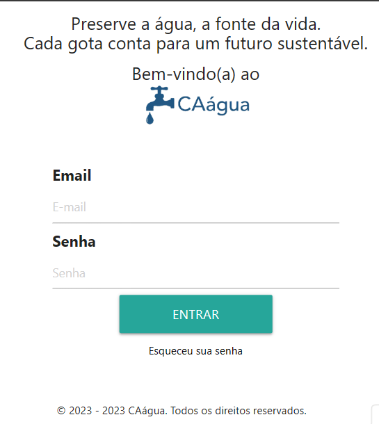
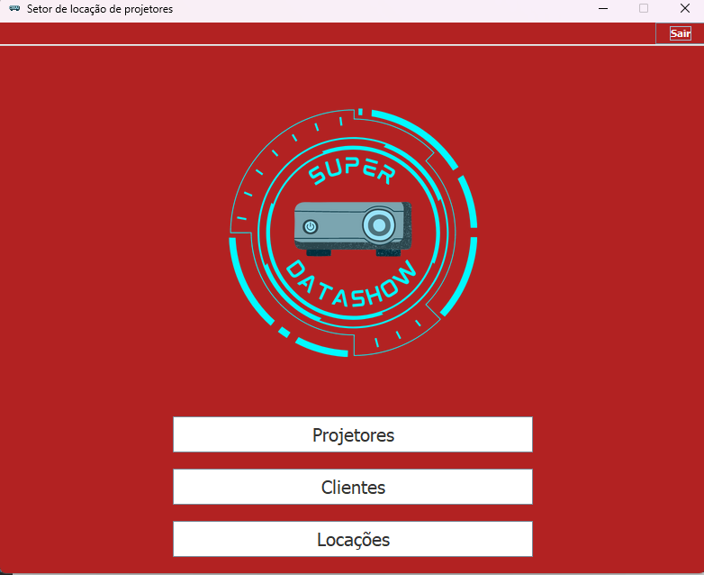
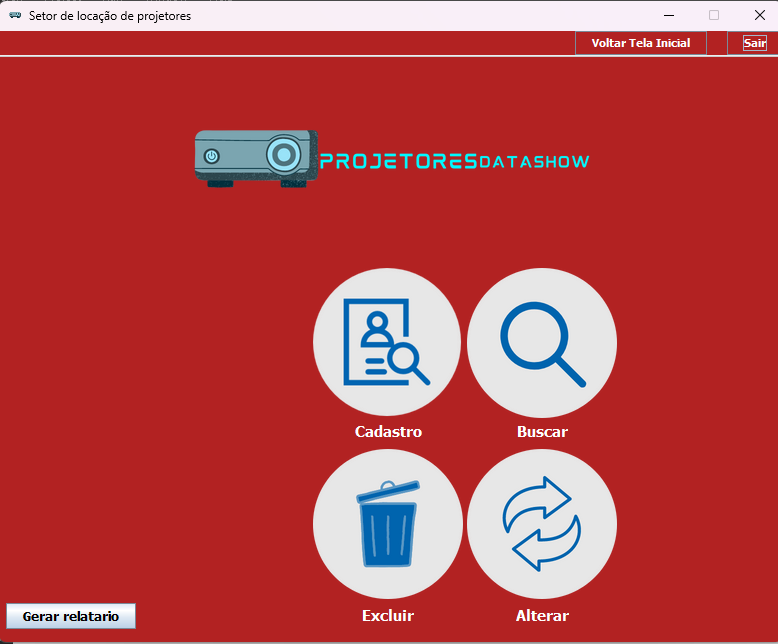
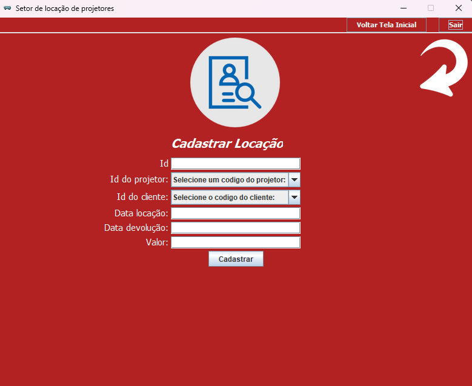
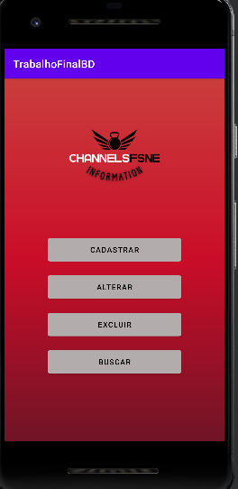
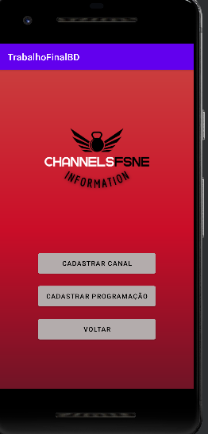
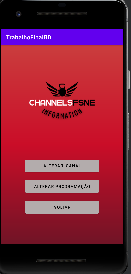
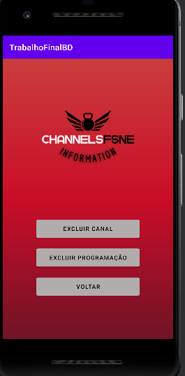

Meus projetos
Trabalho de conclusão de curso(TCC)
Sistema para gerenciamento de água em uma comunidade da cidade de Nova Esperança do Sul
Baixar_PDF_TCC_João_Vitor_Santi_Valvassori Link do site que foi desenvolvimento

O projeto mais recente é um marcador de 3 sete(Jogo de baralho) em que soma até os 41 e mesmo se sair fica salvo os números, funciona apenas em celulares.
O acesso basta clicar nesse link: Marcador de 37
Acesso ao repositório: Projeto no GitHub

O primeiro projeto é um Software dedicado ao Controle e Gestão de Locações de Projetores, o professor deu as orientações necessárias e foi realizado em dupla.



O segundo projeto é um App dedicado para canais de televisão, no App consegue-se ver os canais e os horários e datas que as programações vão passar, o professor deu as orientações necessárias e esse trabalho foi realizado em dupla.



